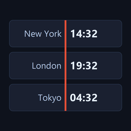

NowLine
Nowline puts every time zone you care about on one shared timeline. Drag it, and every card moves together — so you are always reading the same moment in every zone, instead of doing the arithmetic in your head.
Nowline is being prepared for release on the App Store and Google Play. Store links will appear here once it is published.
What it does
One timeline, every zone
Drag the timeline sideways and every card follows. Let go and it drifts back to now after about five seconds; double-tap to snap back immediately.
Works offline
Time zone rules and the searchable city index ship inside the app, so clocks, search and the timeline all work with no connection.
Daylight saving, visible
Orange marks the hour that is skipped when clocks go forward; blue marks the hour that repeats when they go back — the two days a year that break every mental calculation.
Your labels, not just cities
Rename any card to a person, an office or a project. Clearing the text restores the original city name.
Ten languages
English, German, Spanish, French, Japanese, Korean, Portuguese, Russian, Arabic and Chinese, with right-to-left layout where it belongs.
Four themes
Automatic, Light, Dark and Midnight, plus a 12- or 24-hour clock and haptics you can turn off.
Private by default
Everything you create in Nowline — your cards, their order, their labels — is stored on your device and goes nowhere else. There is no account to make and nothing to sign in to. The app does not use GPS and never asks for location permission; the one thing that touches the network is a single approximate guess at your city on first launch, from your IP address. Analytics can be turned off entirely in Settings → Privacy, and with it off the SDK is never started at all. The details are in the Privacy Policy.
What it costs
Three cards are free. A single one-time purchase removes the limit — it is not a subscription, and there is no recurring charge. Nothing is time-limited and nothing expires.
Questions
Does it work without a connection?
Yes. The only thing that uses the network is that first-launch city guess.
Does it need my location?
No. There is no location permission and no GPS. The first card is guessed from your IP address, which is approximate and is often wrong behind a VPN — swipe it away and add the right city from search.
Can I reorder, rename or delete cards?
Long-press and drag to reorder, double-tap to rename, swipe to delete. Deleting asks for confirmation.
I paid, but my cards are limited again
Open the Premium screen and tap Restore Purchases, signed in to the same store account you bought with.
More answers — and how to reach us — on the Nowline support page.
Legal
Support · Privacy Policy · End User License Agreement · Deleting your data
Nowline is published by Tilveno, Republic of Armenia. Questions about the app go to support@tilveno.com.